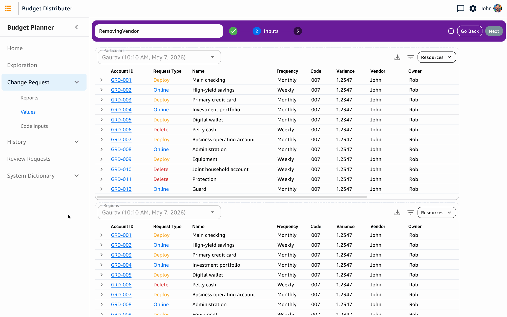
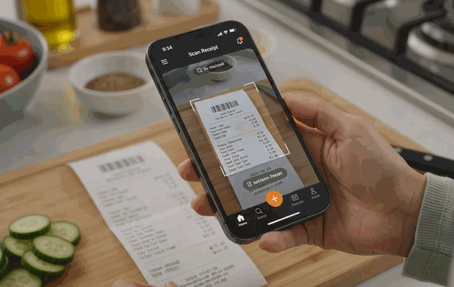
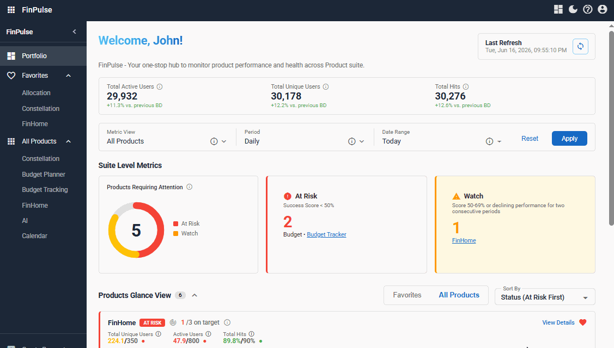
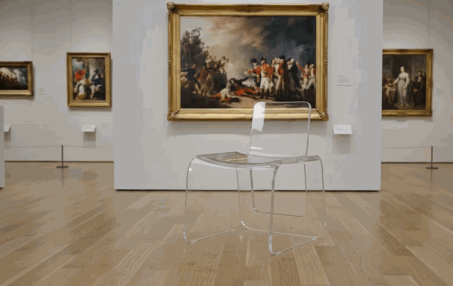

Experience
Where I've worked
2026 — Now
UX Designer
PCL Parkinson Consulting · Seattle, WA (Remote)
2025 — 2026
Creative Designer
Amazon · Seattle, WA
2024 — 2025
Industrial Design Intern
AtmoSpark Technologies · Houston, TX
2023 — 2024
Industrial Design UX Intern
BMW Group · Greenville, SC
2022
Student Administrative Assistant
SCAD · Savannah, GA
2021
Process Design Engineer
Equipment Manufacturer · Pune, India
2018 — 2020
Graduate Assistant
UNC Charlotte · Charlotte, NC
Projects

OPEX Allocation Tool - Reviewing resources
SaaS · Product · FinTechFrom chasing data across tabs to making decisions faster.
94% faster — 9.7 hrs to 33 min SaaSProductFinTech
Alexa as a Scalable Customer Assistant
Service Design · Voice UX · Industrial DesignA tiered voice assistant: a phone call, then a screen, then the room itself.
3.1B reachable users Service DesignVoice UXIndustrial Design
SousChef Lite
Product Design · UX/UI · Front-end EngineeringA private, pantry-first cooking companion. No sign-up, nothing stored on a server.
3,090 recipes matched to your pantry Product DesignUX/UIPrivacy by Design
Service Track Tool
UI · Dashboard · EnterpriseMonitor, Manage, Maintain and Support every product user.
1 month reporting → 2s live view UIDashboardEnterprise
Click to open →